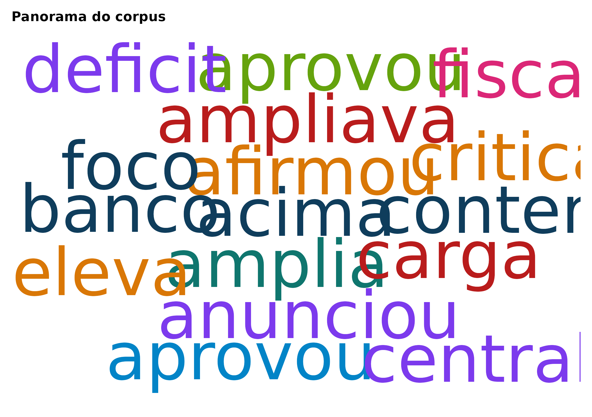
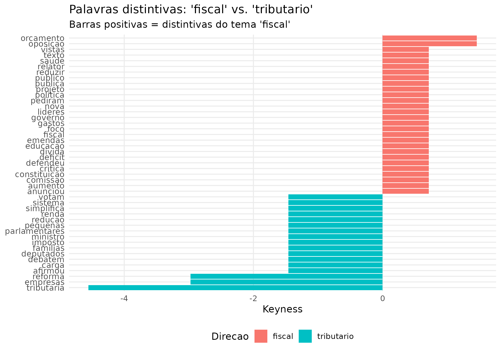
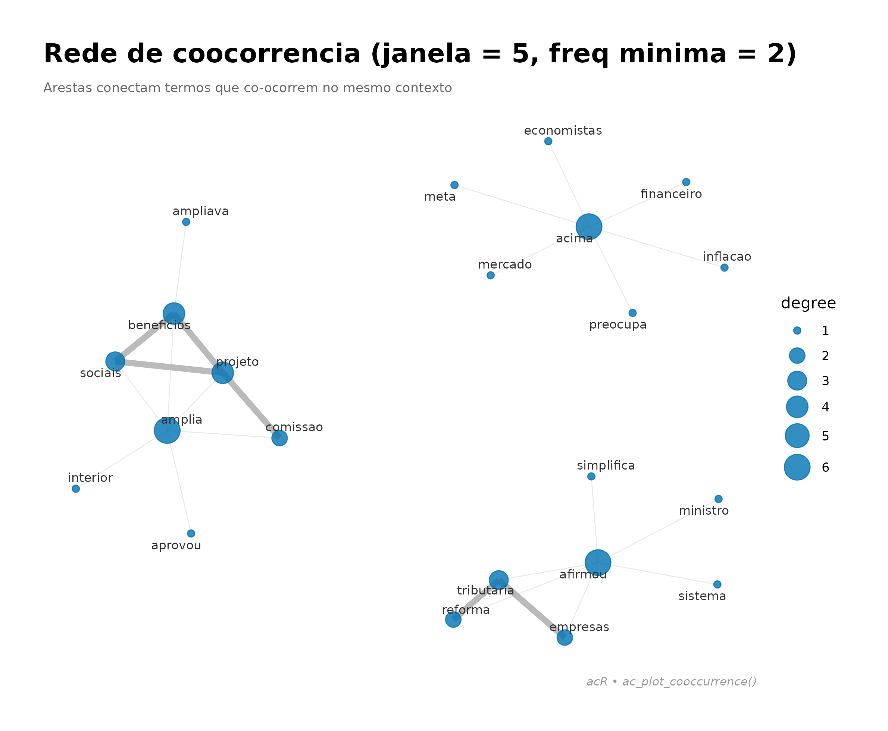

1. Corpus
library(acR)
textos <- c(
"O governo anunciou nova politica fiscal para reduzir o deficit.",
"A oposicao critica o aumento dos gastos publicos no orcamento.",
"Parlamentares debatem reforma tributaria e imposto de renda.",
"O presidente vetou o projeto que ampliava beneficios sociais.",
"Senado aprova marco legal para investimentos em infraestrutura.",
"Deputados votam pela reducao da carga tributaria para empresas.",
"Politica monetaria do Banco Central eleva a taxa de juros.",
"Inflacao acima da meta preocupa economistas e mercado financeiro."
)
corpus <- ac_corpus(data.frame(
text = textos,
tema = c("fiscal","fiscal","tributario","social","infraestrutura","tributario","monetario","monetario"),
stringsAsFactors = FALSE
))
print(corpus)
#>
#> ── Corpus acR ──────────────────────────────────────────────────────────────────
#> • Documentos: 8
#> • Metadados: 1 coluna
#> • Idioma: "pt"
#>
#> # A tibble: 8 × 3
#> doc_id text tema
#> <chr> <chr> <chr>
#> 1 doc_1 O governo anunciou nova politica fiscal para reduzir o deficit. fiscal
#> 2 doc_2 A oposicao critica o aumento dos gastos publicos no orcamento. fiscal
#> 3 doc_3 Parlamentares debatem reforma tributaria e imposto de renda. tribut…
#> 4 doc_4 O presidente vetou o projeto que ampliava beneficios sociais. social
#> 5 doc_5 Senado aprova marco legal para investimentos em infraestrutura. infrae…
#> 6 doc_6 Deputados votam pela reducao da carga tributaria para empresas. tribut…
#> # ℹ 2 more rows2. Limpeza
corpus_limpo <- ac_clean(corpus)
print(corpus_limpo)
#>
#> ── Corpus acR ──────────────────────────────────────────────────────────────────
#> • Documentos: 8
#> • Metadados: 1 coluna
#> • Idioma: "pt"
#>
#> # A tibble: 8 × 3
#> doc_id text tema
#> <chr> <chr> <chr>
#> 1 doc_1 o governo anunciou nova politica fiscal para reduzir o deficit fiscal
#> 2 doc_2 a oposicao critica o aumento dos gastos publicos no orcamento fiscal
#> 3 doc_3 parlamentares debatem reforma tributaria e imposto de renda tributa…
#> 4 doc_4 o presidente vetou o projeto que ampliava beneficios sociais social
#> 5 doc_5 senado aprova marco legal para investimentos em infraestrutura infraes…
#> 6 doc_6 deputados votam pela reducao da carga tributaria para empresas tributa…
#> # ℹ 2 more rows3. Tokenizacao
tokens <- ac_tokenize(corpus_limpo, n = 1L)
print(head(tokens, 20))
#> # A tibble: 20 × 3
#> doc_id token_id token
#> <chr> <int> <chr>
#> 1 doc_1 1 o
#> 2 doc_1 2 governo
#> 3 doc_1 3 anunciou
#> 4 doc_1 4 nova
#> 5 doc_1 5 politica
#> 6 doc_1 6 fiscal
#> 7 doc_1 7 para
#> 8 doc_1 8 reduzir
#> 9 doc_1 9 o
#> 10 doc_1 10 deficit
#> 11 doc_2 1 a
#> 12 doc_2 2 oposicao
#> 13 doc_2 3 critica
#> 14 doc_2 4 o
#> 15 doc_2 5 aumento
#> 16 doc_2 6 dos
#> 17 doc_2 7 gastos
#> 18 doc_2 8 publicos
#> 19 doc_2 9 no
#> 20 doc_2 10 orcamento4. Frequencia
contagem <- ac_count(corpus_limpo)
print(contagem)
#> # A tibble: 71 × 3
#> doc_id token n
#> <chr> <chr> <int>
#> 1 doc_1 o 2
#> 2 doc_4 o 2
#> 3 doc_1 anunciou 1
#> 4 doc_1 deficit 1
#> 5 doc_1 fiscal 1
#> 6 doc_1 governo 1
#> 7 doc_1 nova 1
#> 8 doc_1 para 1
#> 9 doc_1 politica 1
#> 10 doc_1 reduzir 1
#> # ℹ 61 more rows6. Nuvem de palavras
ac_wordcloud(contagem, max_words = 50)
#> Warning in wordcloud::wordcloud(words = df_plot$token, freq = df_plot$n, :
#> empresas could not be fit on page. It will not be plotted.
#> Warning in wordcloud::wordcloud(words = df_plot$token, freq = df_plot$n, :
#> financeiro could not be fit on page. It will not be plotted.
#> Warning in wordcloud::wordcloud(words = df_plot$token, freq = df_plot$n, :
#> imposto could not be fit on page. It will not be plotted.
#> Warning in wordcloud::wordcloud(words = df_plot$token, freq = df_plot$n, :
#> inflacao could not be fit on page. It will not be plotted.
#> Warning in wordcloud::wordcloud(words = df_plot$token, freq = df_plot$n, :
#> infraestrutura could not be fit on page. It will not be plotted.
#> Warning in wordcloud::wordcloud(words = df_plot$token, freq = df_plot$n, :
#> investimentos could not be fit on page. It will not be plotted.
#> Warning in wordcloud::wordcloud(words = df_plot$token, freq = df_plot$n, :
#> mercado could not be fit on page. It will not be plotted.
#> Warning in wordcloud::wordcloud(words = df_plot$token, freq = df_plot$n, :
#> monetaria could not be fit on page. It will not be plotted.
#> Warning in wordcloud::wordcloud(words = df_plot$token, freq = df_plot$n, :
#> oposicao could not be fit on page. It will not be plotted.
#> Warning in wordcloud::wordcloud(words = df_plot$token, freq = df_plot$n, :
#> orcamento could not be fit on page. It will not be plotted.
#> Warning in wordcloud::wordcloud(words = df_plot$token, freq = df_plot$n, : para
#> could not be fit on page. It will not be plotted.8. Keyness
freq_tema <- ac_count(corpus_limpo, by = "tema")
freq_2grupos <- freq_tema[freq_tema$tema %in% c("fiscal", "tributario"), ]
kn <- ac_keyness(freq_2grupos, group = "tema", target = "fiscal")
ac_plot_keyness(kn, n = 15)
9. Coocorrencia
cooc <- ac_cooccurrence(corpus_limpo, window = 5L)
ac_plot_cooccurrence(cooc, top_n = 20)